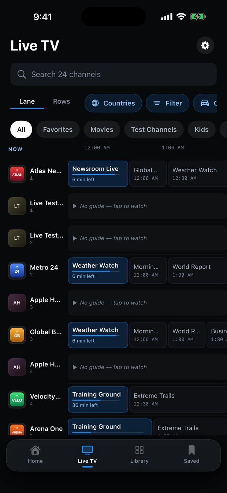

Car.TV 사용 방법
모든 기능을 단계별로, 그리고 차량에서 사용하는 방법까지.
목차
둘러보기 보기
CarPlay에 연결
- 차량 확인하기Car.TV는 CarPlay에서 비디오를 지원하는 차량에서만, iOS 26.4 이상일 때 차량 화면에 비디오를 표시합니다. 다른 차량에서는 소리가 재생됩니다. 설정 › 차량 확인에서 내 차량이 무엇을 할 수 있는지 알 수 있습니다.

- 유선 또는 무선으로케이블로 iPhone을 차량의 CarPlay USB 포트에 연결하거나, 차량이 지원하면 무선 CarPlay를 사용하세요.

- iPhone에서 CarPlay 켜기설정 › 일반 › CarPlay › 차량 선택. ‘잠겨 있을 때 CarPlay 허용’을 켜세요.

- 차량 화면에서 Car.TV 찾기CarPlay 홈 화면에서 Car.TV를 탭하세요. 보이지 않나요? iPhone에서 설정 › 일반 › CarPlay › 내 차량 › 사용자화 › 앱으로 이동하세요.

- 볼 것을 고르세요라이브 TV, 내 비디오, 음악, 재생목록이 휴대폰에서처럼 차량 화면에 있습니다.

- 주차 중에만 비디오차량이 움직이면 CarPlay는 화면을 멈추고 Car.TV는 소리를 계속 재생합니다. 휴대폰에는 “차량 화면 · 소리만”이 표시됩니다.

- 스티어링 휠 버튼라이브 TV 중에는 다음과 이전 버튼으로 채널이 바뀝니다. 설정 › 재생에서 끌 수 있습니다.
- 동승자용: 차량 모드휴대폰에서는 차량 모드가 큰 타일과 큰 버튼을 보여 줍니다. 운전자는 도로에서 눈을 떼지 마세요.

시작하기
- Car.TV에 오신 것을 환영합니다라이브 TV, 영화, 비디오, 음악을 iPhone에서, TV에서, 그리고 주차 중에는 차량 화면에서. 1분 둘러보기를 시작합니다.
- 여기에서 무엇이든 추가IPTV 재생목록(M3U), Xtream 포털, Jellyfin·Emby·Plex 서버, 클라우드 폴더 또는 파일 앱과 사진 앱의 비디오.
- 모든 항목 검색채널, 영화, 시리즈, 내 비디오와 노래.
- 설정나의 소스, Premium, 언어, 차량 모드, 자녀 보호 잠금, 그리고 이 가이드.
- 홈보던 곳에서 이어집니다: 이어서 시청, 현재 방송, 보관함의 새 항목.
- 라이브 TV모든 채널을 국가별 또는 필터로 볼 수 있습니다. 채널을 길게 누르면 편성표와 즐겨찾기가 나옵니다.
- 보관함내 것부터: 내 비디오, 음악, 재생목록은 오프라인으로 재생됩니다. 영화와 시리즈는 나의 소스에서 가져옵니다.
- 저장됨즐겨찾기와 다운로드. 신호가 없을 때를 위해.
- 아직 재생목록이 없나요?샘플 채널을 사용해 보고 영화를 열어 모든 기능이 어떻게 동작하는지 확인하세요.
- 플레이어전체 화면으로 열립니다. 아래로 쓸어내리면 둘러보는 동안 작은 막대에서 계속 재생됩니다.
- 내 파일 가져오기Wi-Fi 전송으로 컴퓨터에서 비디오와 음악을 보내거나, 브라우저로 웹에서 저장하세요.
- 차에서 Car.TV를 사용하나요?CarPlay 연결 방법을 단계별로 확인하세요. 이 둘러보기는 언제든지 설정 › Car.TV 사용 방법에서 다시 볼 수 있습니다.
라이브 TV

- 채널 찾기모든 채널을 이름으로 검색합니다.
- 두 가지 레이아웃, 국가, 필터레인 또는 행, 국가별 채널, 언어·카테고리·화질 필터.
- 채널 길게 누르기편성표, 즐겨찾기, 그리고 편성 정보가 없을 때는 편성표 수정.
TV 편성표
- 시간대 넘겨 보기현재 방송 중인 프로그램을 탭하면 시청할 수 있습니다.
- 지난 방송 보기아카이브가 있는 채널의 지난 방송은 처음부터 보기를 제공합니다.
보관함
- 내 파일내 비디오, 음악, 재생목록. 오프라인으로 재생되어 이동 중에도, 차 안에서도 볼 수 있습니다.
- 나의 소스에서재생목록과 서버의 영화와 시리즈. 소스나 카테고리로 필터링하고 정렬할 수 있습니다.
- 이 선반 검색보고 있는 선반에서만 찾습니다.
- 보관함이 기억합니다마지막으로 사용한 선반에서 열립니다.
내 비디오
- 비디오 길게 누르기다음에 재생, 재생목록에 추가, 이름 변경, 이미지 선택, 폴더로 이동, 공유 또는 삭제.
- 여러 개 선택여러 비디오를 한 번에 이동, 대기열에 추가 또는 삭제합니다.
- 정렬 및 보기날짜, 이름, 크기, 길이 또는 최근 재생 순으로, 격자나 목록으로 볼 수 있습니다. 저장 공간도 여기에 있습니다.
- 비디오 추가파일 앱이나 사진 앱에서, Wi-Fi 전송으로 컴퓨터에서, 또는 웹에서.
음악
- 노래, 앨범, 아티스트원하는 방식으로 음악을 둘러보세요.
- 노래 쓸어 넘기기오른쪽으로 쓸어 재생목록에 추가하고, 왼쪽으로 쓸어 세부사항을 편집하거나 삭제하세요. 길게 누르면 다음에 재생.
- 잠자기 타이머선택한 시간이 지나면 음악이 자동으로 멈춥니다.
재생목록
- 새로운 재생목록비디오와 노래를 원하는 순서로 섞어 보세요. 뒷좌석에서도, 드라이브에서도.
- 가져오기다른 앱에서 .m3u 재생목록을 가져옵니다.
- 스마트 재생목록자동으로 최신 상태 유지: 최근 추가된 항목, 아직 안 본 항목, 짧은 비디오 등.
재생목록 하나

- 나만의 커버사진 앱의 이미지나 비디오의 한 장면을 커버로 선택하세요: ⋯ › 커버.
- 재생 또는 셔플재생목록 전체를 재생합니다. 모든 항목이 이 기기에 있으면 오프라인으로도 됩니다.
- 반복, 속도, 슬라이드쇼재생목록마다 반복과 속도가 따로 저장됩니다. 사진을 추가하면 노래가 재생되는 동안 전체 화면으로 표시됩니다.
- 더 보기비디오나 노래 추가, 세부사항 편집, 고정, 복제, M3U로 내보내기. 드래그해 순서를 바꾸고, 왼쪽으로 쓸어 넘겨 제거하세요.
플레이어

- 화면 탭하기컨트롤을 보이거나 숨깁니다.
- 15초 건너뛰기15초 뒤로 또는 앞으로 이동합니다. 가운데 버튼은 일시 정지입니다.
- 화면, 소리 등맞춤·채우기·확대, 오디오 트랙, 자막, 속도, A/V 동기화.
- TV에서 재생AirPlay, Google Cast 또는 같은 Wi-Fi의 DLNA 스마트 TV로 재생합니다.
- 차량 모드동승자를 위한 큰 버튼.
- 계속 재생하기닫거나 아래로 쓸어내리면 작은 막대에서 계속 재생됩니다.
차량 모드

- 동승자용큰 타일과 큰 버튼. 운전자는 도로에서 눈을 떼지 마세요.
- 차량 모드 종료전체 앱으로 돌아갑니다.
저장됨
- 즐겨찾기와 다운로드채널을 길게 누르거나 영화를 열고 저장됨에 추가를 탭하세요. 다운로드한 항목은 신호가 없어도 재생됩니다.
브라우저
- 검색 또는 주소 입력시작 페이지에 즐겨찾기와 자주 방문하는 사이트가 표시됩니다.
- 탭여러 페이지를 한 번에 열고, 기록이 남지 않는 개인 정보 보호 탭도 사용할 수 있습니다.
- 이 페이지에서 저장보관할 권리가 있는 음악과 비디오를 저장하세요. 노래는 음악으로, 비디오는 내 비디오로 들어갑니다.
Wi-Fi 전송
- 서버 시작그런 다음 같은 Wi-Fi에 연결된 컴퓨터에서 표시된 주소를 열고 파일을 끌어다 놓으세요.
- 이 화면을 열어 두세요이 화면을 벗어나면 전송이 중단됩니다. 노래는 음악으로, 비디오는 내 비디오로 들어갑니다.
설정
- 나의 소스재생목록과 서버를 추가, 편집, 새로 고치거나 끌 수 있습니다.
- 이 가이드둘러보기를 다시 보고, CarPlay를 연결하고, 원하는 언어로 가이드를 읽으세요.
질문
운전 중에는 왜 차량 화면에서 소리만 나오나요?
안전을 위해 CarPlay 비디오는 이렇게 동작합니다. 화면은 차량이 주차된 동안에만 표시됩니다. 차량이 움직이면 CarPlay가 화면을 멈추고 소리는 계속 재생됩니다. 어떤 앱도 이를 바꿀 수 없습니다.
차량 화면에 Car.TV가 없어요. 왜 그런가요?
Car.TV는 CarPlay에서 비디오를 지원하는 차량에서만, iOS 26.4 이상일 때 나타납니다. 설정 › 일반 › CarPlay › 내 차량 › 사용자화 › 앱을 확인하고, Car.TV 설정의 차량 확인도 살펴보세요.
Car.TV에 채널이 포함되어 있나요?
아니요. Car.TV는 사용자가 추가한 것을 재생합니다. 이용 권한이 있는 IPTV 재생목록이나 포털, 내 미디어 서버, 또는 내 비디오와 음악입니다. 샘플 재생목록으로 사용 방법을 확인해 보세요.
인터넷 없이 무엇을 재생할 수 있나요?
내 비디오와 음악의 모든 항목, 다운로드한 항목, 그리고 이것들로 만든 재생목록입니다. 인터넷이 필요한 항목은 재생목록에 표시됩니다.
내 비디오와 음악을 Car.TV에 넣으려면 어떻게 하나요?
+ 버튼으로 파일 앱이나 사진 앱에서, Wi-Fi 전송으로 컴퓨터에서, AirDrop이나 공유 버튼으로, 또는 브라우저로 웹에서 가져올 수 있습니다.
사진 슬라이드쇼가 있는 재생목록은 어떻게 만드나요?
보관함 › 재생목록 › 신규에서 노래를 추가한 다음, 슬라이드쇼 추가로 사진을 고르세요. 재생목록을 재생하면 노래가 나오는 동안 사진이 화면을 채웁니다.
내 재생목록이 다른 기기에도 표시되나요?
네. Premium을 사용하고 설정에서 iCloud 동기화를 켜면 표시됩니다. 비디오와 노래는 추가한 기기에 남아 있으므로, 다른 기기의 재생목록에는 그 기기에 있는 항목이 표시됩니다.
Car.TV가 내 데이터를 수집하나요?
아니요. 계정도, 광고도, 추적도 없습니다. 나의 소스, 재생목록, 사진은 내 기기에 저장되며, 켜면 내 iCloud에도 저장됩니다.
운전 중에는 절대 비디오를 보지 마세요. CarPlay는 차량이 주차된 동안에만 비디오를 표시합니다. 주행 중에는 운전자는 듣기만 해야 합니다.